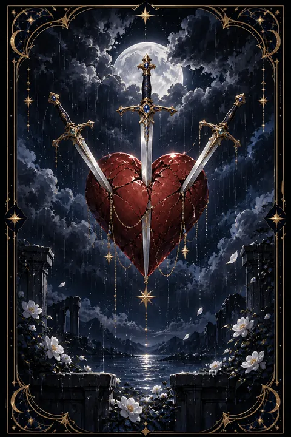

이 게시물은 쿠팡 파트너스 활동의 일환으로, 이에 따른 일정액의 수수료를 제공받습니다.


검 3 카드 — 상처와 슬픔을 지나는 시간
검 3 카드 한눈에 보기
검 3 카드 상징 읽기

동네보살의 카드 그림은 전통 라이더–웨이트 덱의 뜻을 새 그림으로 옮긴 것입니다. 아래 상징 설명은 전통 덱의 그림을 기준으로 합니다.
먹구름이 낮게 드리운 하늘 아래 붉은 하트 하나가 떠 있고 세 자루의 검이 그 하트를 꿰뚫고 있습니다. 인물이 전혀 등장하지 않는 이 단순한 구도는 아픔 그 자체에 시선을 모으게 합니다.
하트는 감정과 사랑을, 검은 생각과 말과 진실을 상징합니다. 날카로운 말이나 받아들이기 힘든 사실이 마음 깊숙이 파고든 상황을 표현한 것입니다. 검이 세 자루인 것은 상처가 한 번이 아니라 여러 방향에서 겹쳐 왔음을 뜻하기도 합니다.
비스듬히 쏟아지는 빗줄기는 흘려야 할 눈물과 슬픔을 나타냅니다. 비는 괴로운 장면이지만 동시에 땅을 씻어 내는 정화의 의미도 가집니다. 먹구름 역시 영원히 머물지 않으므로 이 카드는 아픔이 지나간 뒤에 찾아올 맑은 하늘까지 함께 품고 있습니다. 세 자루의 검이 모두 한가운데로 모이는 모습은 아픔의 원인이 분명하다는 것도 알려 줍니다.
검 3 카드 정방향 뜻
정방향 검 3은 마음이 깊이 다치는 경험을 뜻합니다. 이별, 배신감, 실망, 날카로운 말처럼 가슴을 찌르는 일이 생기거나 외면해 온 진실을 마주하게 되는 시기입니다.
이 카드는 슬픔을 억누르지 말라고 말합니다. 괜찮은 척 넘기면 상처는 겉으로만 아문 채 속에서 오래 남습니다. 울고 싶을 때 울고 믿을 수 있는 사람에게 이야기를 털어놓는 것이 회복의 첫걸음입니다.
아픔 속에도 의미는 있습니다. 그동안 가려져 있던 문제가 드러났기에 이제 비로소 제대로 정리할 수 있게 되었습니다. 당장 누구의 잘못인지 따지기보다 자신의 마음을 먼저 돌보세요. 규칙적으로 먹고 자는 기본적인 일상을 지키는 것만으로도 버틸 힘이 생깁니다. 비가 그치듯 이 슬픔도 지나가며 그 뒤에는 한층 깊어진 마음이 남습니다.
검 3 카드 역방향 뜻
역방향 검 3은 상처가 아물어 가는 회복의 흐름을 보여 줍니다. 한동안 가슴을 짓누르던 슬픔이 조금씩 옅어지고 지난 일을 조금 더 담담하게 돌아볼 수 있게 됩니다. 용서하거나 스스로를 놓아주는 과정이 시작되는 시기이기도 합니다.
다만 다른 의미도 함께 있습니다. 슬픔을 제대로 흘려보내지 못하고 억누른 채 지내 왔다면 겉으로는 괜찮아 보여도 마음 한구석에 아픔이 남아 있을 수 있습니다. 같은 기억을 반복해서 떠올리며 스스로를 괴롭히고 있지는 않은지 살펴보세요.
회복은 서두른다고 빨라지지 않지만 멈추지 않는다면 분명히 이루어집니다. 지난 일을 곱씹는 시간을 조금씩 줄이고 새로운 일상과 관계에 마음을 열어 보세요. 흉터는 남더라도 그 자리는 한층 단단해집니다.
연애에서 검 3 카드
지금 혼자라면 지난 연애에서 입은 상처가 덜 아문 탓에 누군가에게 선뜻 곁을 내주기 힘든 때입니다. 서둘러 빈자리를 채우려 하면 비슷한 아픔을 되풀이하기 쉬우니 먼저 마음을 추스르는 기간을 넉넉히 두세요. 혼자 보내는 시간이 쓸쓸함만이 아니라 회복의 시간이 될 수 있습니다.
사귀는 사이라면 뜻밖의 말이나 알게 된 사실로 마음이 크게 흔들릴 수 있습니다. 감정이 가장 뜨거운 순간에 이별을 입에 올리기보다 서로의 사정을 끝까지 들어 보는 것이 먼저입니다. 상처를 준 쪽이라면 변명 대신 진심 어린 사과를, 상처받은 쪽이라면 아픔을 솔직하게 말하는 용기가 필요합니다. 함께 아픔을 건넌 두 사람은 이전보다 서로를 깊이 이해하게 되기도 합니다. 서두르지 않는 마음이 다음 사랑을 더 건강하게 만듭니다.
재회·속마음 질문에서 검 3 카드
재회 질문에서 검 3이 나오면 헤어질 때 남은 상처가 아직 깊다는 뜻입니다. 지금 다시 연락하면 서로의 아픈 곳을 건드려 같은 싸움이 반복될 가능성이 큽니다. 재회를 서두르기보다 무엇이 두 사람을 아프게 했는지 차분히 돌아보는 시간이 먼저 필요합니다. 역방향이라면 상처가 아물어 가는 중이라 시간이 흐른 뒤 편안한 대화가 가능해질 수 있습니다. 어느 경우든 자신의 마음을 먼저 회복하는 것이 가장 좋은 준비입니다. 연락하고 싶은 마음이 들 때마다 그 이유를 한 줄씩 적어 보면 그리움인지 외로움인지 구분하는 데 도움이 됩니다. 아픔을 충분히 흘려보낸 뒤에 내린 결정이어야 어느 쪽이든 후회가 적습니다. 서로에게 준 상처를 인정하는 말 한마디가 대화의 첫 단추가 됩니다.
일·금전에서 검 3 카드
일과 직장에서는 실망스러운 소식이나 인간관계의 상처를 뜻하는 카드입니다. 기대했던 평가가 나오지 않거나 믿었던 동료에게 서운한 일을 겪을 수 있습니다. 감정이 가라앉기 전에 대응하면 상황이 더 꼬이기 쉬우니 하루쯤 시간을 두고 사실만 정리해서 이야기하는 것이 바람직합니다.
주머니 사정으로 보면 예상 밖의 손실이나 기대가 어긋나는 일이 생길 수 있습니다. 손실을 한꺼번에 만회하려는 무리한 선택은 피하고 지출을 점검하며 차근차근 회복하는 편이 안전합니다. 이 시기의 실망은 다음 선택을 더 신중하게 만드는 밑거름이 됩니다. 속상한 마음은 믿을 만한 동료에게 털어놓되 공개된 자리에서 감정을 드러내는 일은 삼가세요.
검 3 카드는 예일까 아니오일까
마음을 다치게 하는 일이나 아픈 진실이 드러난다는 카드여서 원하는 답이 당장은 어렵다고 보아 아니오로 읽습니다. 거꾸로 놓인 카드라면 아픔이 아물어 가는 흐름이라 시간이 지난 뒤에는 다시 가능성이 열립니다.
자주 묻는 질문
검 3 카드 역방향은 나쁜 뜻인가요?
역방향 검 3은 상처가 아물어 가는 회복의 흐름을 보여 줍니다. 한동안 가슴을 짓누르던 슬픔이 조금씩 옅어지고 지난 일을 조금 더 담담하게 돌아볼 수 있게 됩니다. 용서하거나 스스로를 놓아주는 과정이 시작되는 시기이기도 합니다.
검 3 카드가 연애 질문에 나오면요?
지금 혼자라면 지난 연애에서 입은 상처가 덜 아문 탓에 누군가에게 선뜻 곁을 내주기 힘든 때입니다. 서둘러 빈자리를 채우려 하면 비슷한 아픔을 되풀이하기 쉬우니 먼저 마음을 추스르는 기간을 넉넉히 두세요. 혼자 보내는 시간이 쓸쓸함만이 아니라 회복의 시간이 될 수 있습니다.
타로 카드는 어떻게 뽑나요?
타로 카드 페이지에서 78장을 섞으면 그중 22장이 펼쳐집니다. 마음이 가는 세 장을 고르면 과거·현재·미래 자리에 놓이고, 한 장씩 뒤집어 자리와 방향에 맞는 풀이를 읽습니다. 정방향과 역방향은 섞는 순간 정해집니다.